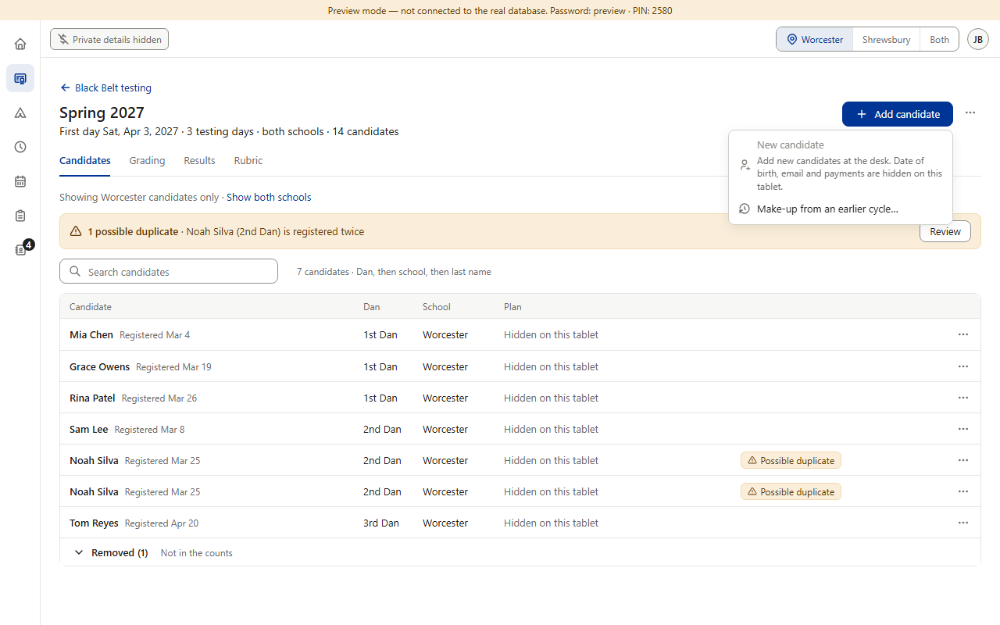
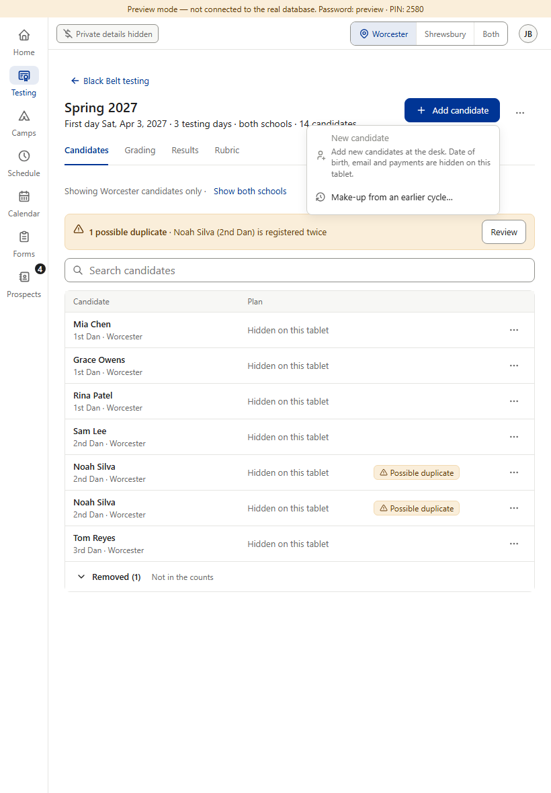
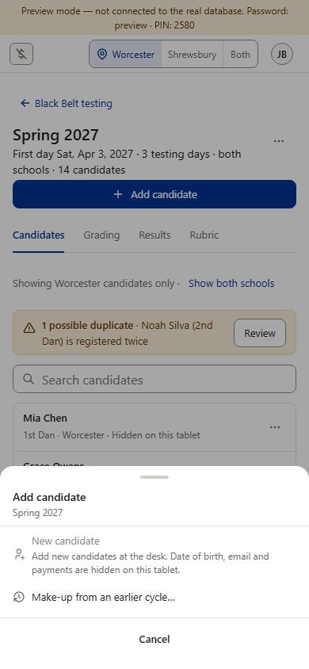
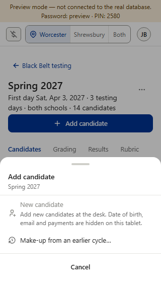

Add candidate now opens its menu instead of being blocked. New candidate is grayed — adding someone needs a date of birth, email and payment, which are hidden on this tablet — and says why. Make-up from an earlier cycle… still works, since it asks for none of those.



